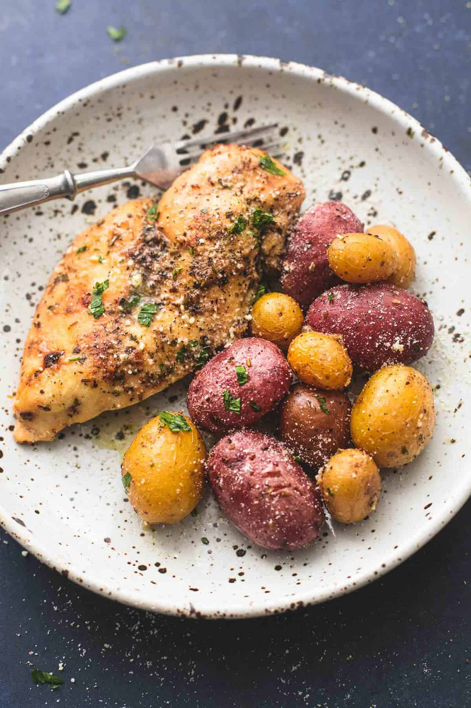

Chicken

Instant Pot Chicken and Potatoes
Instant pot chicken recipe I found online.
Ingredients
- 4 boneless skinless chicken breasts
- 2 pounds baby red or gold potatoes
- 3 tablespoons olive oil
- 1 ½ teaspoons salt - or to taste
- ½ teaspoon pepper - or to taste
- 1 teaspoon garlic powder
- 1 teaspoon dried thyme
- ½ teaspoon dried basil
- ½ teaspoon dried oregano
- 2 tablespoons + 2 teaspoons dry Ranch seasoning - divided
- 1 cup chicken broth
- 3 tablespoons grated parmesan cheese
Steps
- In a large bowl toss chicken and potatoes in the olive oil, then season with salt and pepper. Stir together garlic powder, thyme, basil, oregano, and 2 tablespoons of the Ranch seasoning. Sprinkle over the chicken and potatoes, tossing to distribute the ingredients as evenly as possible.
- Add chicken broth to the instant pot/pressure cooker, then place chicken in the broth, and top with the potatoes. Place the lid on in the locked position and turn the vent to the sealed position. Set pressure cooker to "pressure cook" for 10-15 minutes. (see note)
- Once the cook time is finished, do a "quick release" by turning the vent to the venting position. Once float valve has dropped, remove the lid. Drain the pressure cooker or use a slotted spoon to transfer chicken and potatoes to a large platter.
- Sprinkle with Ranch seasoning and parmesan cheese and garnish with chopped thyme or parsley if desired before serving.